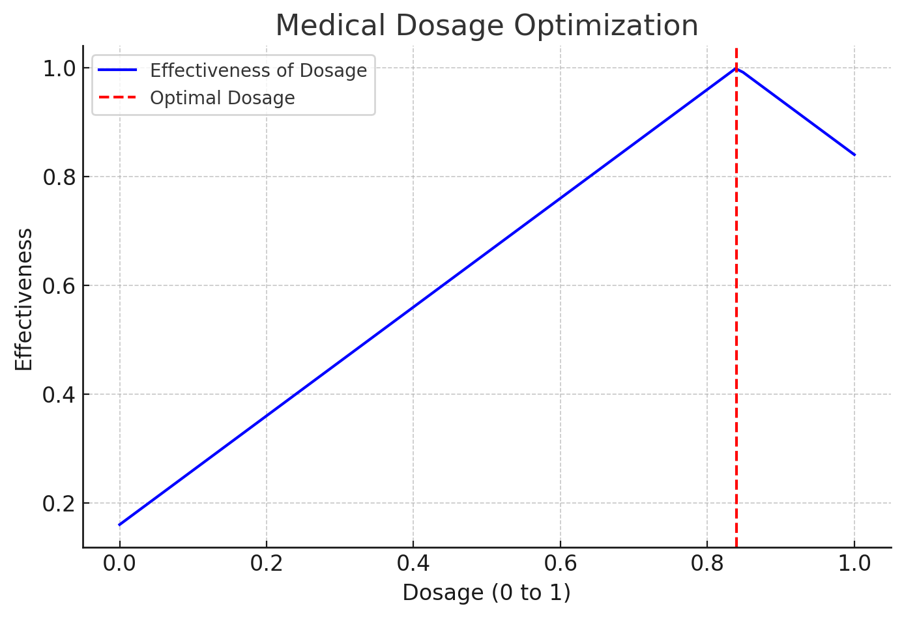

1. Lodi – Your Personal Moving Assistant (Logistical Digital Assistant)
Lodi is a lightweight AI Agent built to help with long distance move planning. It uses ChatGPT to guide each task, SerpAPI to search for moving companies in real time, and the Google Sheets API to save results to the cloud. Lodi finds contact info like phone numbers and emails from mover websites, helping you stay organized while automating the research.
 View README
View README
2. Dosage Optimization via Monte Carlo Search
This project simulates how to find the best medical dosage when testing is limited and results can vary. It uses a Monte Carlo style approach with adaptive ternary search: testing several options each round, averaging noisy results, and focusing in on the best performing range. This mirrors real world problems like figuring out the right medication dose when trials are few and outcomes aren’t perfectly reliable.
 View README3. Redis Integration Sandbox with Datadog
A self contained Docker environment to explore how Datadog collects Redis metrics using its Agent integration. Includes scripts to generate synthetic Redis traffic like key writes, expirations, and counter increments and validate visibility for metrics like redis.mem.used, redis.net.commands, and redis.stats.keyspace_hits in the Metrics Explorer.